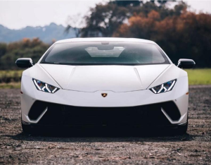

|  |
Lamborghini Huracan
|
The Lamborghini Huracan is another high-performance sports car manufactured by Lamborghini. It was introduced in 2014 as a successor to the Lamborghini Gallardo, and it is positioned below the Lamborghini Aventador in the company's product lineup.
Like the Aventador, the Huracan features a mid-engine layout and is powered by a naturally aspirated V10 engine. The standard Huracan produces 602 horsepower and 413 lb-ft of torque, which allows it to go from 0 to 60 mph in just 3.2 seconds, with a top speed of over 202 mph.
The Huracan's design is more angular than the Aventador, with a more aggressive and modern appearance. It also features Lamborghini's signature scissor doors, which add to its exotic and sporty look. The interior of the Huracan is also luxurious, with high-quality materials and a modern design.
Over the years, Lamborghini has introduced various special editions and variants of the Huracan, such as the Huracan Performante and the Huracan EVO. These models have offered even more power and performance, making the Huracan a popular choice among supercar enthusiasts.